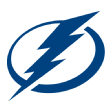

The Tampa Bay Lightning has clinched the Stanely Cup Playoffs and here is where you can find all the score and game updates throughout the playoffs.
Tampa Bay Lightning (No. 3 Atlantic) vs. Colorado Avalanche (No. 1 Central)
 3-2
Avalanche leads series 3-2
15:23 Jan Rutta (1)
Assists: Corey Perry (4), Mikhail Sergachev (7)
5:07 Valeri Nichushkin (9)
Assists: Cale Makar (21), Nathan MacKinnnon (10)
8:10 Nikita Kucherov (8) (Power Play)
Assists: Corey Perry (5), Steven Stamkos (8)
2:31 Cale Makar (8)
Assists: Devon Toews (10), Valeri Nichushkin (6)
13:38 Ondrej Palat (11)
Assists: Mikhail Sergachev (8), Victor Hedman (16)